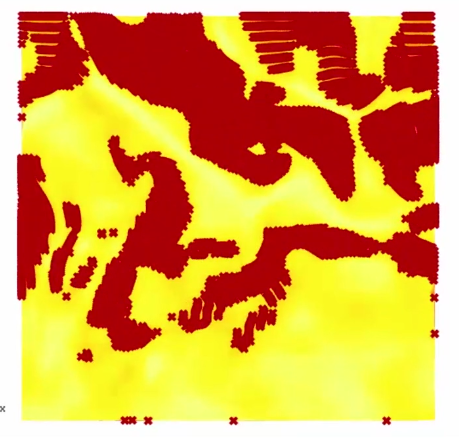
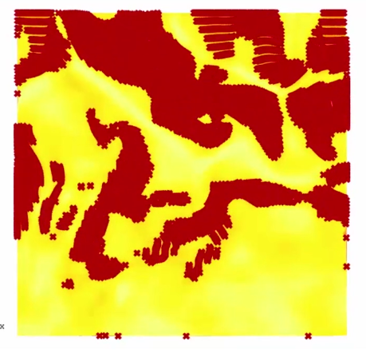
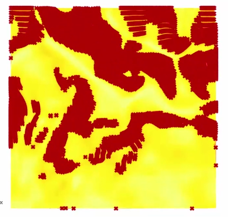

|  |
|-|-|
|  |
|-|-|| |  |
|-|-|
Sometimes it is necessary to filter a dataset for a range of values.
Dataset
Filtering requires a dataset. The dataset should contain one type of values, such as either numbers or categories.
Filter criteria
An algorithm iterates over the values of a dataset and compares them to the filter criteria. The filter criteria differ by dataset. Numeric datasets might be filtered by intervals of numbers. Categoric datasets might be filtered by specific categories. Imagine a greyscale bitmap with each pixel representing a grey-value, by chosing only grey-values above 0 (white), all white can be filtered.
Streets can be filtered by their frequency of usage as primary, secondary or tertiary roads.
Points can be filtered by their coordinates or distance to each other. Choosing i.e. the Z-coordinate and checking if a it is below a certain number, allows filtering points by height.
Land Uses could be filtered according to their use and size. I.e. show only industrial areas above 2ha.
Terrain slopes above a certain angle might not be useful for laying out streets and need to be filtered out of a dataset.